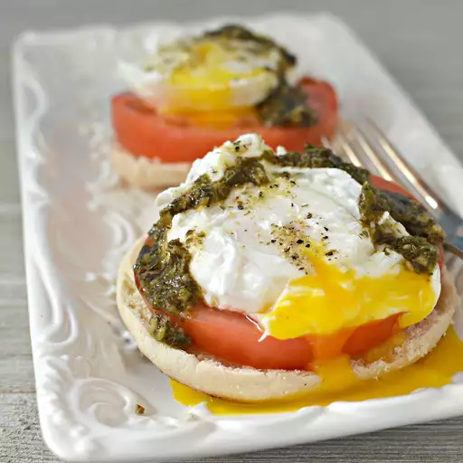

Poached Eggs Recipe

Healthy and tasty poached eggs for breakfast, lunch
or even dinner
Poached Eggs
Delicious poached eggs that everyone is bound to enjoy.
Easy to make and very healthy for adults and children!
Ingredients
- 1 tbsp distilled white vinegar
- 2 tsps salt
- 4 eggs
- 2 english muffins, split
- 4 slives of mozzarella cheese
- 1 tomato, thickly sliced
- 4 tsp pesto
- salt to taste
Steps to make
- Fill pan with 2 to 3 inches of water and bring to a boil
reduce heat medium-low, pour in vinegar and 2 tsps salt,
keep water at a gentle simmer
- while waiting for water to simmer place a slive of cheese
and slice of tomato onto each muffin half and toast until
cheese softens, about 5 minutes.
- Crack an egg into a small bowl. Holding the bowl just above
the water's surgace, gently slip the egg into simmering water.
Repeat with remaining eggs. Poach eggs until whites are firm
and yolks have thckened but are not hard, 2 1/2 to 3 minutes.
Remove eggs from water and dab them on a kitchen towel to Remove
excess water.
- Place poached egg ontop of each English muffin. Spoon a teaspoon
of pesto sauve onto each egg and sprinkle with salt to taste.